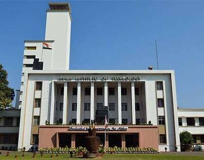
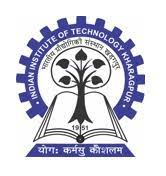

My Education...
"The whole purpose of education is to turn mirrors into windows."These are the exact words quoted by Sir. Sydney J Harris,a notable American Journalist.
A person without education is like a bird without it's wings.Though it exists, but the very purpose of it's existence isn't that prominent.The educational institutions we attend play a key role in shaping up our lives and our career.
I would gladly like to enumerate the names of the educational institutions I attended in past or attend currently.
IIT Kharagpur -> Dec 2020-Present
I am an undergrad student of IIT Kharagpur currently,in the Department of Mechanical Engineering.This new chapter of my educational journey has been slightly boring in this case due to this online curriculum, but still, nothing overrides the pleasure of being a part of one of the most prestigious Engineering Institutions of India!!.
Click here to know more about my college life and the courses I completed till now.Happy reading!!

